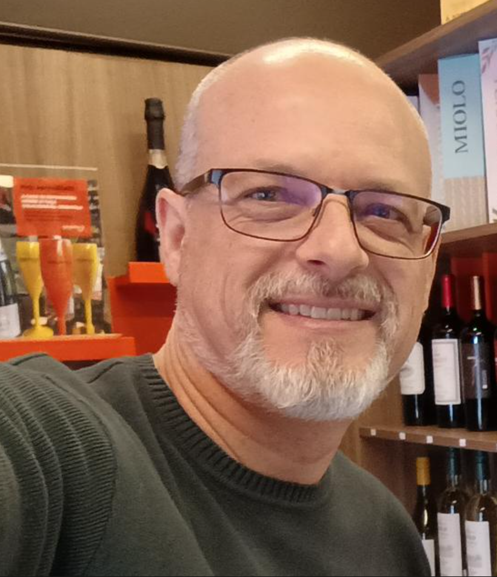

Sou o Dr. Sandro Hillebrand, e minha conexão com a natureza começou cedo, lá na Serra Gaúcha, onde cresci em uma propriedade rural. Desde criança, estive envolvido com o campo: meu pai era apicultor, e a gente vivia cercado de árvores frutíferas, horta, agricultura de subsistência e uma bela área de mata nativa. Foi nesse ambiente que nasceu meu interesse por plantas medicinais e produtos naturais — algo que me acompanha até hoje.
Com o tempo, fui em busca de mais conhecimento. Saí de casa pra estudar aos 14 anos, fiz o curso técnico em química, depois me formei bacharel em Química, mestre em Biologia Celular e Molecular e doutor em Física Biomolecular. Ao longo de quase 30 anos de carreira, já percorri diversos caminhos: atuei na indústria, fui professor universitário, desenvolvi pesquisas e também tive meus próprios negócios. Em outras palavras, já experimentei o que é alcançar grandes voos... e também o que é lidar com quedas. Tudo isso me ensinou muito.
Hoje, minha vida é dedicada à produção e ao estudo dos óleos essenciais. Além de produzir e vender, também me aprofundei na aromatologia e abracei com entusiasmo o desafio de tornar produtiva e sustentável a pequena área de terras da minha família de origem — um resgate das minhas raízes com um olhar técnico e inovador.
Em 2019, fui convidado a coordenar um projeto financiado pela FAO (Organização das Nações Unidas para a Alimentação e Agricultura) em parceria com o MAPA (Ministério…) e executado pela UNISC (Universidade de Santa Cruz do Sul), com o objetivo de criar novas oportunidades de renda para agricultores familiares de pequenas propriedades. Desde então, venho me especializando nas áreas tecnológicas e na viabilidade econômica da produção de óleos essenciais.